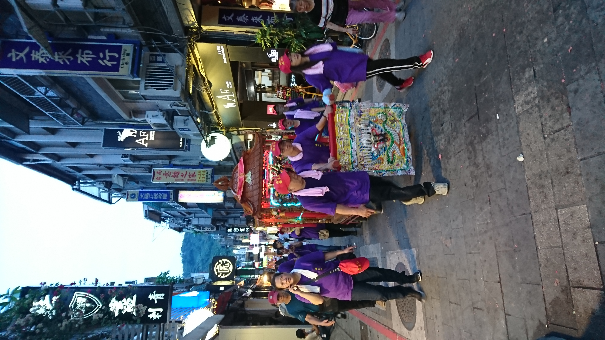
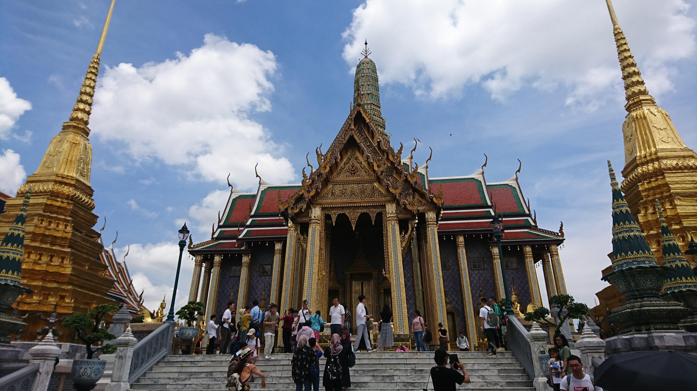
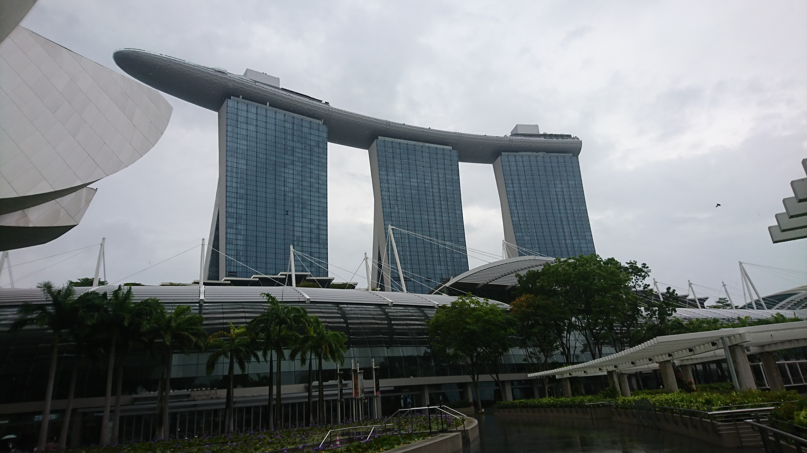
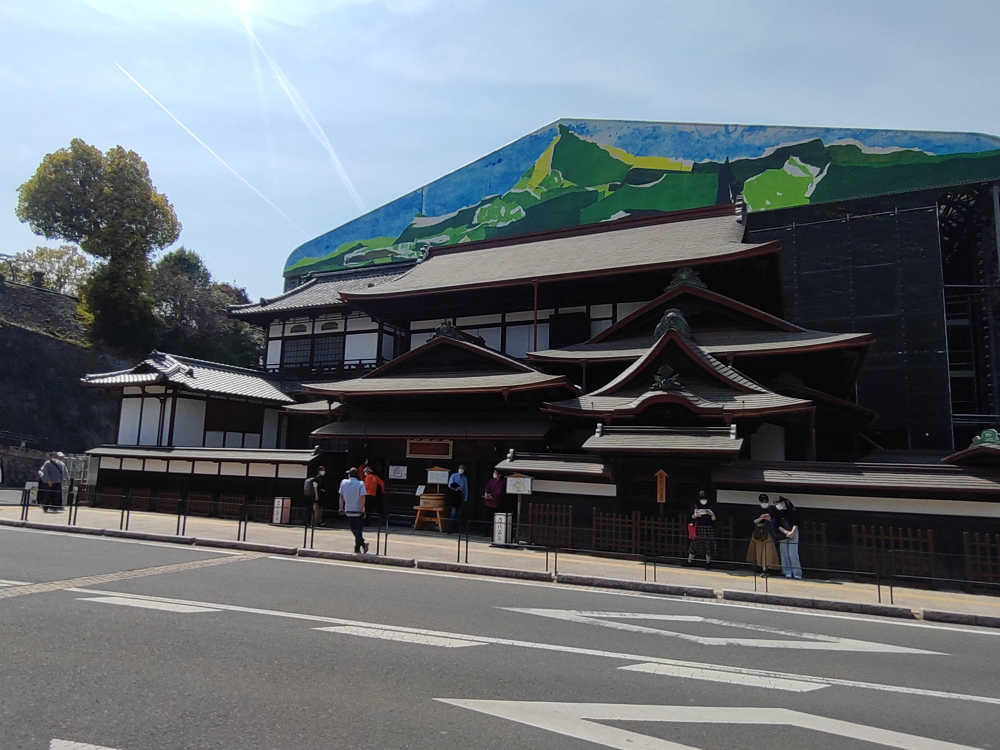
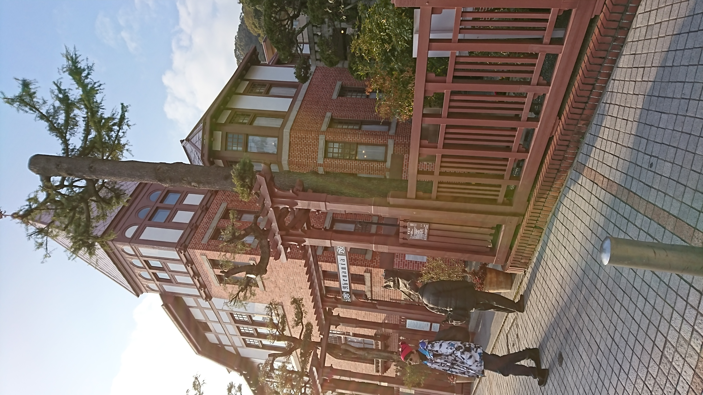
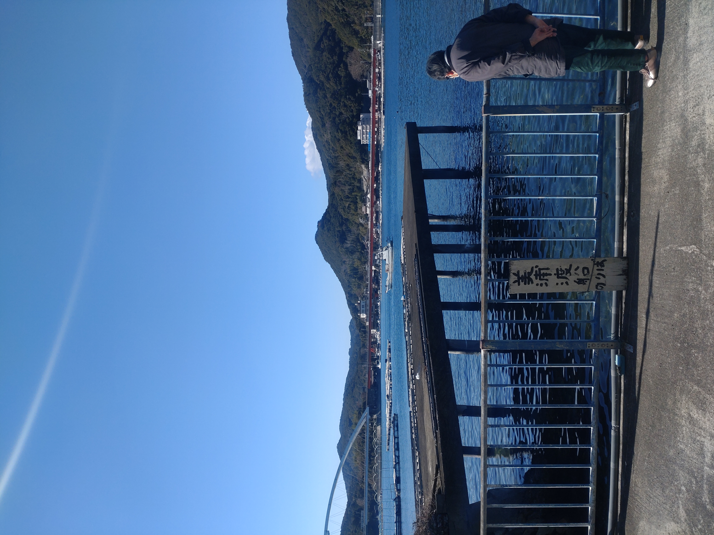

さあ書を捨てて旅に出よう 2017~2023 trip
Let's travelling somewhere
海外旅行
台湾(Taiwan)
日本と長きに渡って友好のある親日国、街のあっちこっちに日本との歴史的な繋がりが感じられます
台湾を訪れた時は、国立中正紀念堂に行こう。そこで台湾の歴史を肌で感じられる。
オススメの食べ物は、パイナップル、牛魯飯。僕のお気に入りの街は、台南夜店
台湾は治安も良く、交通機関などのインフラもしっかりしているため、安心して旅行を楽しめる。
タイ(Thailand)
熱心な仏教の国、そして人々のおおらかな国民性、そしてゆったりとした時間、心の安らぎを感じられます
タイの歴史を知るなら、バンコクから離れたアユタヤ遺跡(Ayutthaya heritage)に行こう。
そして夜は、バンコクの最新ITビル、サイアムパラゴンで夜景を見るが、ベストです。
パクチーは好きですか、好みはそれぞれ分かれますが、ふりかけのように少しかけるのは、意外といけるかも？
マレーシアとシンガポール(malaysia and Singapore)
近年多大な経済発展を遂げたアジアの経済国、マレーシアとシンガポール。両国ともに宗教、文化、食生活に多様性を感じさせられます。
マレーシアは、イスラム教が国教でクアラルンプールのナショナルモスクは、壮大です。
クアラルンプールから150km離れた場所に、キリスト教とイスラム教の入り混じった多文化の町、マラッカがある。
マレーシアの隣国のシンガポールは、アジアを代表するビジネス都市国家、地下鉄、ビルディングなど東京都引けを取らないほど
テクノロジーの最先端を行っている。

フィリピン、セブ島(philippine Cebu island)
穏やかな気候中で育まれた楽観的な国民性、カトリックの要素も合間ってラテンで陽気な島国です
セブは地図で見るより広く、広大です。シティを離れれば、海、山、谷と美しい自然に囲まれている。
僕が、実際にセブの人たちから感じたの、とてもフレンドリーで陽気な様子です。
特にバナナ、マンゴーなど果物が豊富で、さらに新鮮、味もとてもsweetyで美味しいです。

国内旅行
広島(Hiroshima)
歴史的悲劇から70年が過ぎ、ホスピタリティと活気に湧く街
広島は実は、日本でも有数の政令指定都市。交通機関として主に路面電車がオススメです
観光としては、宮島、呉漁港、原爆ドーム、原爆記念館があります。僕のオススメは、呉の海上自衛隊博物館です。
広島のソウルフードは、もちろんお好み焼きです。中でも「もみじ」というお好み焼き屋さんは、一番美味しかったです。

鹿児島(Kagoshima)
日本の歴史的偉人を輩出してきた九州の街。鹿児島弁の訛りはとても可愛いです
鹿児島市からバスで1時間の場所に知覧特攻博物館があります。ここは、私の人生に影響を
与えた印象的な場所でした。もし鹿児島を訪れる際には、みなさんにも是非行って欲しいです。
鹿児島の食べ物で美味しいのは、黒豚です。特に鹿児島市内天文館にある「くろや」の
黒豚コロッケは絶品です。

松山(Matsuyama)
夏目漱石と正岡子規にゆかりのある街。道後温泉の後の鯛めしは最高だ
松山市は、江戸時代には城下町として知られた街。街の至る所にその名残があります。
私の訪れた「坂の上ミュージアム」は日本の開国前、正岡子規とその友人たちの
ことが展示されており、とても面白い博物館でした。
食べ物に関しては、前述した鯛めし、そして果物のみかんがあります。
愛媛松山のみかんは、特産品で、みかんを使ったケーキは、格別です。
神戸(Kobe)
西洋と日本文化が融合した街、中華街、教会、多様性に富んで日本なのに海外を感じられる
神戸と言えば何が思い浮かびますか？一言では表現できないですよね。
神戸は、中華街、旧異人街など歴史的に様々な国の人たち共生してきた街
中でも私のお気に入りは、中華街です。ここで食べた本場仕込みの北京ダックは
とても脂が乗っており、ジューシーで歯ごたえも最高でした。
三重(Mie)
私の地元、伊勢神宮そして名古屋まで続く四日市からの夜景は、感動を与える。
三重県といえば、伊勢神宮とよく言われますが、僕、地元桑名氏は、伊勢神宮から100km以上離れています。
三重の名物は、四日市のトンテキです。他にも僕の地元、桑名はたくさんの韓国料理店があります。
中でも僕のお気に入りは、「来来憲」のトンテキです。
その他にも桑名には、日本有数のテーマパーク、長島スパーランドがあります。
